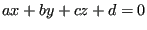
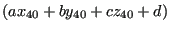
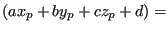

Next: Finite element containment Up: Interpolation procedure Previous: Nearest point algorithm Contents
The next important algorithm is the check whether the interpolation location belongs to a given tetrahedron or not. A tetrahedron has 4 faces. These faces are catalogued according to the lowest node number in the face in fields such as ipofa(*) and ifac(1..4,*), cf. the section 10.12.3 on face fields in mesh refinement. Each face has a unique number and is also described by a plane equation, the 4 coefficients of which are stored in planfa(4,*). Now, a face belongs to at most 2 elements, and is listed in the face list ifatet(1..4,*) of these elements. In order to be able to distinguish between inside and outside of a tetrahedron i related to one of its faces, the face in ifatet(1..4,i) gets the sign of the plane equation of the face after substitution of the remaining node of element i opposite the face.
For instance, suppose face A (consisting of nodes 10, 20 and 30) belongs to element i (consisting of nodes 10, 20, 30 and 40). Let us assume that ifatet(2,i)=A and that the equation of face A is . Now, ifatet(2,i) is replaced by sign. Therefore, an interpolation location p will be on the same side of face A w.r.t. element i if signsign (ifatet(2,i)). The same applies to the other faces of element i.